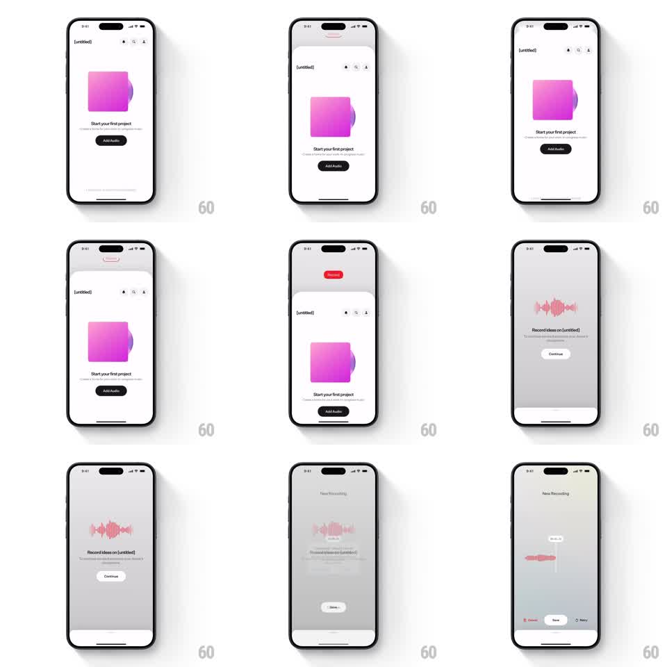

Media
Frame-by-frame

Rebuild this interaction 1:1: pull down from the top of an empty-project screen to reveal a hidden red Record button - the pink artwork stretches with the pull, the screen dims into a recording overlay with a live waveform, then lands on a New Recording review screen.

Rebuild this interaction 1:1: pull down from the top of an empty-project screen to reveal a hidden red Record button - the pink artwork stretches with the pull, the screen dims into a recording overlay with a live waveform, then lands on a New Recording review screen. ## Integration Integration: stack-agnostic spec - springs given as stiffness/damping, timed motions as duration + curve; map every value to your framework and animation library of choice. ## Scene White empty state: pink rounded artwork, "Start your first project" heading, "Add Audio" pill button. Pull-down state: a red "Record" pill descends from the top edge. Recording overlay: dimmed background, pink waveform cluster, "Record ideas on [untitled]" copy, Continue button. Review screen: "New Recording" header, waveform with trim readout, Cancel / Save / Retry row. ## Motion spec Pattern: overscroll pull-to-reveal + staged flow. - Pull down anywhere: content tracks the finger 1:1 downward; the pink artwork stretches vertically with rubber-band resistance (scaleY up to ~1.15) as the red Record pill slides in from off-screen top, meeting the finger's progress. - Past ~80px threshold: release commits - screen dims (250ms), Record pill locks to top-center, waveform cluster fades in pulsing with input level; under threshold, everything springs back (~300/24). - Continue advances: overlay crossfades to the New Recording review screen (~300ms), waveform re-lays-out horizontally with a trim tooltip, and Cancel / Save / Retry fade in with 60ms stagger. - Save: screen springs back to the project view with the new clip attached. ## Calibration - The Record pill reveal is tied to pull distance, not time - partial pull shows a partial pill. - Artwork stretch is resistance-mapped (diminishing), never linear past the threshold. ## Reduced motion Pull reveals the pill without artwork stretch; overlays crossfade. ## Don't miss - The pill only commits past the threshold; short pulls bounce it back off-screen. - The waveform pulses live during recording - it is not a static decoration.